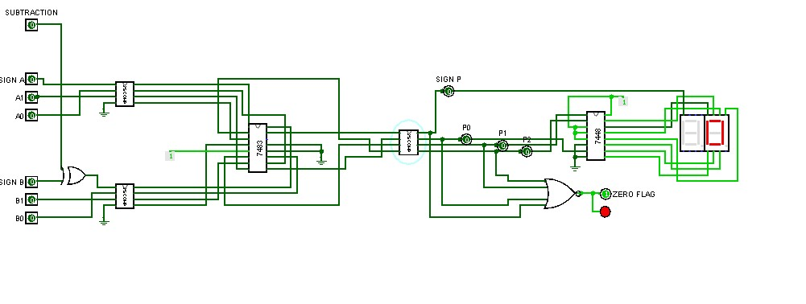
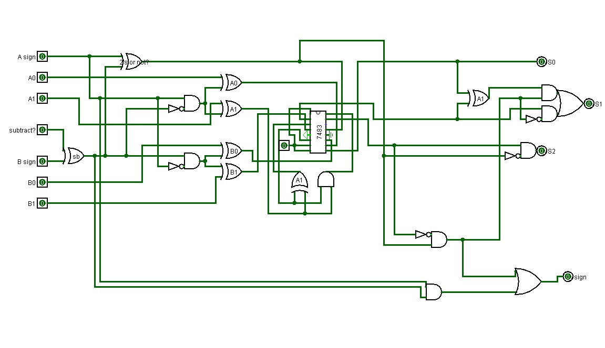

Overview
The goal of this project was to create an adder and subtractor for any two 3 bit numbers, with 2 bits and a parity bit, with as little Logic gates as possible in my design. The value of this is gaining a deeper understanding of Boolean logic and computer hardware design.
Software design
The scope of this project, is using the 7483 full bit adder and extending it to have subtraction. Now, there is a prexisting standard design for the adder and subtractor, which uses over laying full adders, requiring n full adders per n bits. Because this scope was only 2 bits, I was able to optimize it to using only 1 full adder, and minimal ics. The key optimizations used were:
- Per bit compliments, instead of a parametric 2’s compliment. The 2’s compliment for 2 bits is a simple equal for the 0’s bit, and just an xor for the second bit. This was computed using a K map.
- Using the second have of the full adder independently of the first- essentially getting 2 full adders
- Carry and sign logic were mixed to minimize gates usage
- Using NAND as NOR for the one OR gate required in the design, and in general only using XOR and AND to minimize extra IC’s
The end result, is I was able to lean the design to only 7 ics on just one breadboard, Whereas a standard design might use double that. The trade-off was, The design was less modular for increasing bit count. But the goal, of optimizing logic circuitry, was achieved.


Hardware implmentation
The main issue with implementing using a breadboard for such a large circuit is connectivity. Luckily, My optimised design minimized connections. I was deliberate to use the thin jumper which has a stronger connection and made debugging easier. In the end, I achieved a streamlined adder/subber that was functional for 2 bits.

Demo Video
Watch the project in action on YouTube.
Results
This project deepened my understanding of digital hardware design. It was a strong introduction into the world of computer design